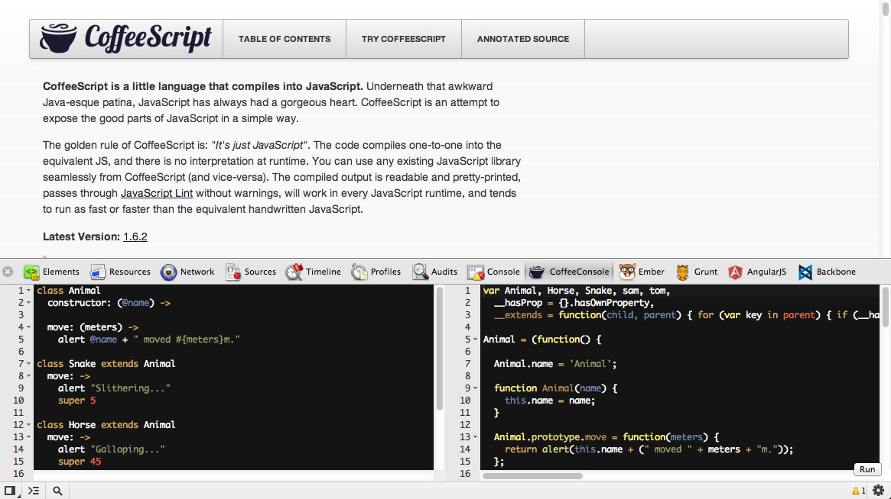
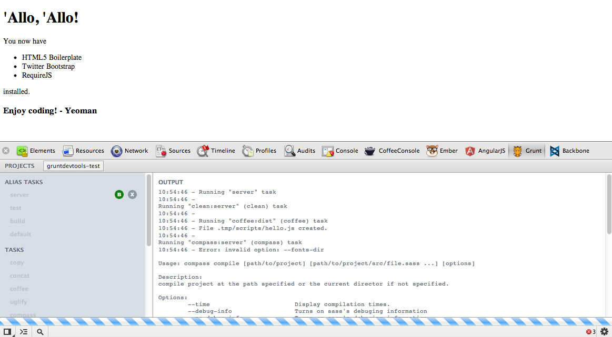
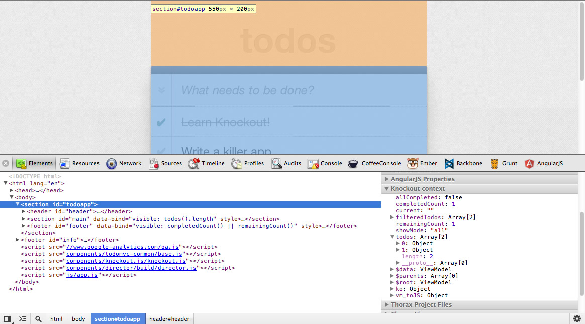
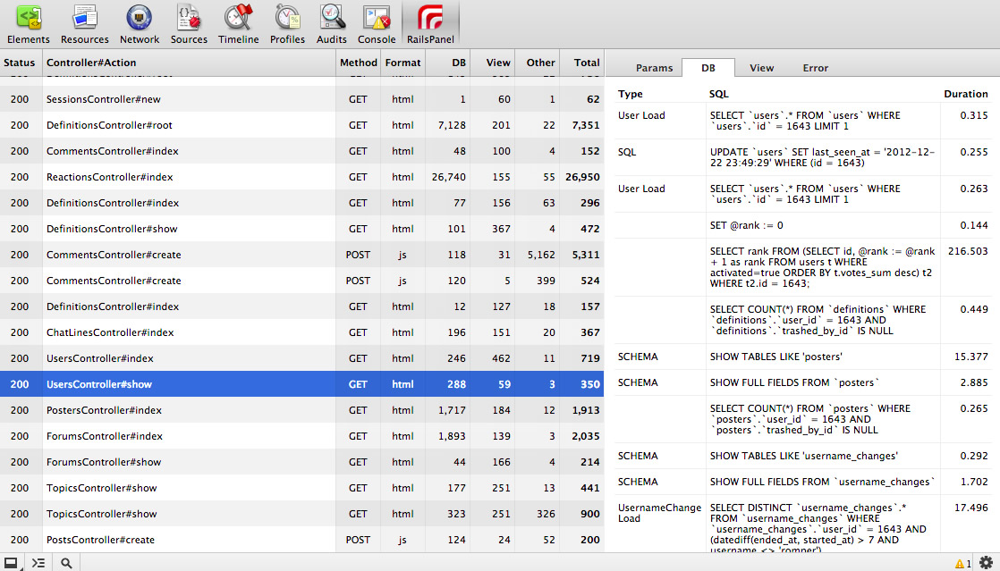

There are many DevTools extensions available or in development. This section presents a small selection of extensions. All of the extensions listed here are available for install from the Chrome Web Store. And they're all open source, so you can use them as inspiration for your own extensions.
AngularJS Batarang is a swiss-army knife for the AngularJS framework, providing panels for inspecting models, analysing dependencies, and instrumenting performance, among other things.
More information:
If you use CoffeeScript, you may be interested in the CoffeeScript Console. As the name suggests, this extension provides a console window that lets you run CoffeeScript code in the context of the current window.

More information:
The Ember Inspector helps you debug Ember.js applications, with easy inspection of controllers, insights into models and their attributes, layers, and more.
More information:
Source code available on GitHub.
For more information, see the Ember Inspector screencasts from Yehuda Katz.
Grunt DevTools provides a GUI for triggering Grunt tasks. Run tests, build steps, or start up a test server without leaving DevTools.

More information:
This extension helps you debug your KnockoutJS application by showing the Knockout context data for the selected DOM node in a sidebar of the elements panel.

More information:
Rails Panel adds a new tab that shows information about requests to the Rails backend. The panel provides insights into view rendering, DB, total request times and more.

More information: